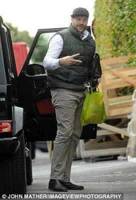

Tyson Fury on Wednesday relinquished his WBA,WBO and IBO titles after deciding to treat himself for depression and cocaine abuse and was for the first time on Thursday spotted arriving at his Lancashire home with a plastic bag containing packets of Doritos among other snacks.
The boxer had confessed in an interview to taking cocaine, fighting depression and being suicidal after refusing to turn up for his title defence fight against Wladmir Klitschko twice this year with his blood samples coming up positive for cocaine in the last one month.
The British Boxing Board of control planned to meet on Wednesday to discuss whether to suspend or ban Tyson from the sport, which would have seen him stripped of the belts enabling a fight between Wladmir Klitschko and Anthony Joshua but Fury has beaten them to the punch by vacating his titles voluntarily.
 Linda Ikeji Blog.The 28-year-old said in a statement:
'I won the titles in the ring and I believe that they should be lost in the ring, but I'm unable to defend at this time and I have taken the hard and emotional decision to now officially vacate my treasured world titles and wish the next in-line contenders all the very best as I now enter another big challenge in my life which I know, like against Klitschko, I will conquer.'
Meanwhile Tyson Fury's uncle and trainer Peter Fury has vowed that Tyson will return to the ring soon.
'I was with him yesterday, me and his dad (John), and just listening to him speak and the way he is.' Peter Fury said on BBC Radio 5 Live on Thursday.
'Boxing is in his life. It's in his blood. It's in his veins. He doesn't know anything else. He's just frustrated. When you lose interest in everything and you can't see the meaning of anything - clearly you've got a problem. 'He's addressing it now and we spoke for three and a half, four hours yesterday. The treatment he's had already is doing him a lot of good. He hasn't got a drug addiction. He just did a stupid thing. He's not going into any clinics for drug abuse; he's got manic depression, which is a version of bipolar (disorder).'They gave a name for it but I can't think of it. They said over a period of the next few months he should start to respond, and (make) progress. He is the linear heavyweight champion of the world. He's done what nobody else could do. He's in the pinnacle of his career. He's only twenty eight years of age. He's got a massive future.
'He is controversial. He lights up boxing, whether it be good or bad. I think it's a case of he is the world champion, the true world champion. I think when he does come back he'll be welcomed with open arms. Especially the way he's voluntarily relinquished his belts.'